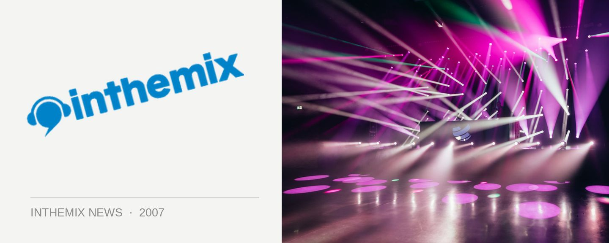

Ohmega Watts secret gig tonight!
After his show at Oxford Art Factory on Saturday night, are you hungering for another dose of underground hip hop’s finest? We’ll you’re in luck because Ohmega Watts will be playing a special gig tonight at Ruby Rabbit for a measly $10!
The Brooklyn bred MC blew hip hop fans away with his debut album The Find, with its blend of energetic old-school rap layed over the top of amazingly accomplished beats and funky instrumentals, with an balance between the big club tunes and the deeper jazzy contributions. His follow up release Watts Happening has recently hit the shelves, and now you’ll have a second chance to catch him in the flesh!
Ohmega Watts plays Ruby Rabbit on Wednesday 28th November, doors open at 9pm and entry is only $10. Get there early!